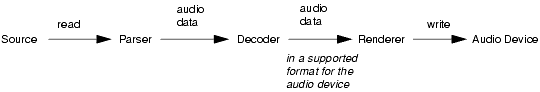

|
|
This chapter discusses porting the Audio Building Block (ABB), a proper subset of the Mobile Media API (MMAPI) that provides only audio functionality. MMAPI is specified in the “Mobile Media API” (JSR-000135) to support multimedia applications for the Java™ 2 Platform, Micro Edition (J2ME™). See http://jcp.org/jsr/detail/135.jsp for more information.
ABB in the MIDP Reference Implementation provides the following functionality:
wav) filesIf a device implements the ABB, it must support both single tones and monotonic tone sequences. The ability to playback audio files (also called sampled audio) is optional.
This chapter contains the sections:
This section provides an overview of the audio building block, and how to implement the one interface that is required for every type of audio support. It covers the topics
The ABB has a high-level object, a Player that controls media playback. A factory mechanism, the Manager (javax.microedition.media.Manager), can create a Player from either a URL or an InputStream object. The manager also provides a call to produce single tones. To get input, the ABB uses the security functionality of the MIDP Reference Implementation. (See Chapter 7, "Security” for more information on the MIDP security model.)
These classes, and others in the ABB, are implemented with both the Java programming language and calls to native code. The following table describes the high-level breakdown between the two for each media type:
The division that you use depends on your device. Take as much advantage as you can of the device’s native capabilities.
The Player interface defines the rendering of time-based media data. Its methods manage the Player's life cycle, controls playback progress, and gets the presentation components.
The basic Player operations that are common to all media types are the Player states, events, controls, and looping. (They are the top-level player API calls.) These operations are usually not CPU-intensive and can be implemented in the Java programming language without sacrificing much performance. The implementation of these basic Player operations is referred to as the player wrapper.
The CPU-intensive operations that require parsing, decoding, and rendering of the media data are described in the later sections that discuss the media types. The implementation of these data processing operations is referred to as the playback engine.
This section discusses how to write classes that implement the Player interface, such as the classes in the com.sun.mmedia package. This section has the topics:
A Player object can be in one of five states:
UNREALIZED – Has been instantiated but not have the information needed to aquire resources; this is the starting state.REALIZED – Has the information needed to acquire the media resources; achieving this state can be resource and time consumingPREFETCHED – Gets scarce or exclusive resources, fills buffers with media data, or performs other start-up processing; the actions of this state reduce startup latency.STARTED – Runs and processes data; this is the state in which sound played.CLOSED – Releases most of its resources and must not be used again.
The Player class defines six state transition methods: realize, prefetch, start, stop, deallocate, and close. These are all synchronous methods—the methods will not return until the state transition is completed or a MediaException occurs. For example, if prefetch is not able to acquire an audio resource, it will throw a MediaException and the Player will remain in the REALIZED state.
Typically, a few operations will be carried out in each of these methods. The Player's state will be updated and the method will return.
Some of these operations can be executed in native code. For example, opening the audio device in prefetch can be executed in native code. If the operation takes a long time to complete, the implementation should make sure that the native code will not block the operations of the virtual machine (VM). Blocking can occur when the native platform or VM does not support multi-threading in native code, such as in the MIDP Reference Implementation.
In these cases, the implementation should attempt to call the native code in a non-blocking manner and poll the status of the native call until it is finished. The pseudo-code in the following example illustrates this.
native void nonBlockingNativeCall(); native boolean isNativeCallDone(); : nonblockingNativeCall(); while (!isNativeCallDone()) { try { wait(100); // Poll at every 100ms as an example. } catch (Exception e) {} }
Events are delivered asynchronously from the Player to applications by using the PlayerListener interface, which is in the javax.microedition.media package. It is recommended that you use a separate thread to deliver the events to the PlayerListeners. By doing so, the Player operations will not be blocked in case the application is blocked at handling the events.
The implementation of the Player’s event delivery mechanism is in the com.sun.mmedia.BasicPlayer.
The setLoopCount method requests the Player to loop for a specified number of times. Looping can generally be implemented in two ways:
Player wrapper can use Java programming language code to track when the media is finished playing by listening for the END_OF_MEDIA event. It can then restart the playback.Player wrapper. This may result in smoother loopback transitions.
The ABB uses the first technique. The class com.sun.mmedia.BasicPlayer implements the looping mechanism.
The phrase synthetic tone refers to the generation and playback of a simple tone or a monotonic tone sequence. It can provide amusing multimedia experiences, such as playing different ring tones.
A simple tone is defined by a note, a duration, and a volume. A monotonic tone sequence is defined as a list of <note, duration> pairs and user-defined blocks. A block is a unit which consists of <note, duration> pairs and can be referenced as a whole from any place in the rest of the tone sequence. For more information about the format and contents of a tone sequence, see the reference documentation for the javax.microedition.media.control.ToneControl class.
This section covers porting the generation of synthetic tones. It has the topics:
The ABB includes modules written in both the Java programming language and native code to implement synthetic tones. The Java programming language modules are described in TABLE 3. The native modules are described in TABLE 4.
|
Module
|
Description
|
|||||||||||||
|---|---|---|---|---|---|---|---|---|---|---|---|---|---|---|
com/sun/mmedia/TonePlayer.java
|
Implements the
javax.microedition.media.Player interface for tone sequences.
|
|||||||||||||
When porting synthetic tones to a target device platform, you must consider whether it has a native tone generator, and whether the tone generator is available in software or hardware. If the platform does not have a native tone generator, you can implement your own in software, but you must make certain implementation decisions that will affect the quality of the tone. If the tone generator has no mixing support, you can also implement tone and tone sequence mixing in software. Finally, you must decide whether the tone generator will run on a thread in the Java platform or a native thread. This has an impact on how tones and tone sequences are played.
This section guides you in making these decisions. It covers the topics:
When porting synthetic tones to a specific device platform, take advantage of any native tone generator that might exist on the device. This is the most efficient and cost-effective way to port synthetic tones. A hardware monotonic tone generator is an example of a generator that might be included on a device platform. If the platform provides a native tone generator, it should also provide native access APIs to start and stop the tone.
If a native tone generator is not available on the device platform to which you are porting, you must generate the tone in software. You must also make decisions that will affect the playback quality of the tone. For example, you must decide which wave form to use for the tone, whether to perform extra processing on the tone if the device supports floating point, and so on.
For example, in the ABB on the Solaris™ Operating Environment (OE) and Linux operating system, the decision was made to generate the triangle wave tone in the format of 8Khz/16bit/linear/mono.
The following sections describe some of the factors which you must consider when generating a synthetic tone.
Floating point can be used for a number of tasks with synthetic tones. For example, it can be used for calculating and interpolating the amplitude and frequency of the wave form. It can also be used in data encryption and decryption. In some wireless devices, floating-point support is provided in hardware. A hardware floating-point unit allows calculations to be performed faster and with greater accuracy. If you are porting the MMA to a device that has such a unit, you are encouraged to take advantage of it.
However, most wireless devices do not have a hardware floating-point unit. In these devices, floating-point computation is emulated in software. This can be extremely slow and expensive in terms of memory.
For example, if the platform to which you are porting does not have floating-point support, you can work around it by scaling values by a large factor (such as 100) before the calculation and scaling it back after the calculation. You could also use a lookup table as much as possible: for each data sample, find the closest element in the table. Of course, these methods will sacrifice the accuracy and increase the memory usage to certain extent.
The ABB in the Solaris OE and Linux operating system does not use floating point. It saves the wave-length of each note in an integer lookup table. Whenever interpolation is needed, the ABB scales up the value by 1000, then scales it down after the calculation.
CODE EXAMPLE 1 displays how interpolation is performed in the ABB.
... ... slope = (amplitude) * 1000 /(K[note]/4); slopeXFade = (amplitude - *yInterrupt) * 1000 /(K[note]/4); ... ... /* triangle wave: 4 discrete fcn's based on phase */ if (t <= K[note]/4) { if (firstPeriod == 1) tonedata = (int)(slopeXFade * t / 1000 + *yInterrupt); else tonedata = (int) (slope * t / 1000); } else if (t <= K[note]/2) { tonedata = (int)(amplitude - (slope * (t - (K[note]/4))/1000)); } else if (t <= ((3 * K[note])/4)) { tonedata = (int) ((-1 * slope) * (t - (K[note]/2))/ 1000); } else { tonedata = (int) ((-1 * amplitude) + (slope * (t - (3 * (K[note]/4))) / 1000)); }
A synthetic tone can be generated by various different wave forms, such as sine waves, triangle waves, saw waves, square waves, and so on. Each wave form sounds different when it is played back. Sine waves sound purest, but they are also the most expensive to generate in terms of processing and memory. Square waves sound the most compound and are the least expensive to generate. The quality of triangle waves and saw waves are in between sine and square waves.
The ABB on the Solaris OE and Linux operating system uses the triangle wave. CODE EXAMPLE 1 displays a sample implementation of a triangle wave from the ABB.
Tone can be generated in either 8-bit or 16-bit format. Normally, 16-bit format has better sound quality, but it requires more memory. A trade-off must be made between sound quality and memory usage.
Another consideration is whether the device to which you are porting supports 16-bit format audio data. Some audio devices support both 16-bit and 8-bit format, while others support 8-bit only.
The ABB on the Solaris OE and Linux operating system uses 16-bit, because the audio driver is more stable with 16-bit data on the Solaris OE.
The following example shows a sample implementation of 16-bit audio support from the ABB.
... ... int len = 8000 * 16 * 1 / 8 / 32 & ~3; ... ... #ifdef BIG_ENDIAN data[2*(x-written)] = (char)((tonedata >> 8) & 0xff); data[2*(x-written)+1] = (char)(tonedata & 0xff); #else /* LITTLE_ENDIAN */ data[2*(x-written)] = (char)(tonedata & 0xff); data[2*(x-written)+1] = (char)((tonedata >> 8) & 0xff); #endif
When generating sampled data for a tone, you should decide how much data is generated per cycle; that is, you should choose a good chunk size. Choosing larger chunk sizes means that more CPU time is required per cycle. If the chunk size is too big, then the first chunk might finish playing before the second chunk is fully generated. The result is a tone that sounds choppy. If the chunk size is too small, the playback by audio device might not be that smooth.
The ABB on the Solaris OE and Linux operating system sets the chunk size to be 32 milliseconds of sampled data. This is an acceptable size for these operating systems.
The following example displays how the chunk size is set to 32 milliseconds of sampled data in the ABB.
Tone generation needs a separate thread to either:
You could use either a Java platform thread or a native thread to perform this task. The following sections describe some of the issues that are involved in deciding which thread to use.
Since the Java programming language has built-in multi-thread support, using those threads is always an option. However, in some cases, Java platform threads could be extremely inefficient. For example, consider the KVM implementation by Sun Microsystems. The entire KVM runs on a single native thread. All of the Java platform threads are green thread: they basically share the time slices within that single native thread. Whenever a Java platform thread invokes a native method, all other Java platform threads are blocked before that native method returns. Therefore, if multiple tones are generated and rendered simultaneously, then there will probably be breakups.
Some device platforms support multiple native threads, while others support only one thread.
If the device platform supports multiple native threads, you should consider using native threads, especially when running on the CLDC/MIDP stack.
For example, consider the function:
in mmatone.c in the ABB on the Solaris OE and Linux operating system. This function launches a native thread to generate and render the tone whenever a new tone arrives.
You should consider using the timer interrupt if it is provided by the device platform. The timer interrupt is usually more accurate than sleep, especially the Java platform’s Thread.sleep method, and it avoids the overhead of creating a separate thread. This is extremely convenient if you use it in conjunction with the native tone generator.
Once you resolve how you are going to generate the single tone, playing a tone sequence seems trivial: simply play the tones one by one. However, there are some issues you must consider: whether to cache the sequence in the Java platform layer (Java layer) or the native layer, and how to parse the tone sequence. This section discusses those issues.
Base your decision on where to cache the sequence on the type of single tone generator and the type of thread you use.
For example, the file mmatone.c in the ABB on Windows 2000 contains code to cache the entire tone sequence in the native layer and create a periodic multimedia timer (similar to a native thread). This timer periodically wakes up to start or stop a tone, move to the next tone, and so on.
ABB defines its own tone sequence format as a byte stream. In addition to the <note, duration> pairs, it also defines the structure component “block” and some control pairs, such as tempo setting, resolution setting, volume setting, long note, and so on. For more information on the tone sequence format, see the refernce documentation for the ToneControl class.
Since the format of the tone sequence is not that simple, parsing it is not trivial. You could choose a one-pass or a two-pass parsing approach.
One Pass Parsing:
These are the tasks that you would have to complete for one-pass parsing:
This approach uses less memory, but may not be efficient if the sequence is played more than once.
Two Pass Parsing:
Two-pass parsing uses more memory than one-pass parsing. These are the tasks that you would have to complete for two-pass parsing:
Mixing tones and tone sequences can be a very desirable feature in applications, such as games. For example, a background sequence can play while foreground tones are triggered by some event.
You should decide whether to support mixing and how to do it. For example, ABB on the Solaris 8 OE takes advantage of the underlying audio driver's mixing functionality. In the Solaris 7 OE and Linux operating system, there is no mixing support.
You could implement your own tone or tone sequence mixing. In this case, it is recommended that you create only one thread to handle all the tones or tone sequences, instead of creating a new thread for each one.
In the ABB on Windows 2000, single tone generation uses the Win32 MIDI API and multimedia timer to generate the tone.
On the Solaris OE and Linux operating system, the ABB generates single tone in 8khz/16bit/mono/linear format, and renders the generated tone data by using /dev/audio and the OSS driver. For each tone or tone sequence, it creates a native thread to generate and render the tone.
The com.sun.mmedia.TonePlayer class, and the C-language files mmatone.c and mmaevt.c, are the implementation modules which play back tone sequences. A TonePlayer instance can be created by invoking either of these methods:
Manager.createPlayer(Manager.TONE_DEVICE_LOCATOR), or Manager.createPlayer(InputStream, tone-mime-type)
The created tone player provides a special type of control, ToneControl, to allow the programming of a tone sequence on the fly.
TonePlayer's setSequence method converts the original sequence to an integer array consisting of <note, duration> pairs. Then it calls a native method to pass this array to the native layer.
On the Windows 2000 operating system, the mmatone.c module contains a native data structure TONESEQ which holds the integer array. There is periodic timer which periodically wakes up to send Note-On and Note-Off messages to the MIDI synthesizer and advance from one tone to the next one. For more information, see the definition of the timeTSProc function in the mmatone.c module.
In the Solaris OE and Linux operating system, the mmatone.c module contains a native data structure TONEDATA which holds the integer array of sequence data. A native thread generates sampled tone data and writes it to the audio device, tone by tone. For more information, see the definition of the tonemain function in the mmatone.c module.
In the ABB running on Windows 2000, Solaris OE, and Linux operating system, the native timer or thread reaches the end of the sequence, it must deliver an END_OF_MEDIA (EOM) event to TonePlayer in the Java layer. Since CLDC/MIDP does not support callbacks to Java programming language smethods in the native layer, the ABB uses the MIDP event queue mechanism to deliver this EOM. This not only improves the performance but is more responsive than other techniques such as creating a polling Java platform thread to periodically check whether an EOM occurs in the native layer.
The MIDP event queue is based on KVM. However, enqueue/dequeue operations in the KVM event queue are not thread safe. This is because KVM assumes that there is only one native thread. To work around this problem, the ABB employs the MIDP read event function. The ABB posts the EOM message to the system event queue (as defined in mmatevt.c), then allows the read event function to pick up the EOM event from the system event queue.
For more information on how the ABB handles event queues, see the code in the com.sun.midp.lcdui.DefaultEventHandler class and the nativeGUI.c implementation module.
The TonePlayer in the ABB provides the VolumeControl and ToneControl classes.
On the Windows 2000 operating system, the ABB uses the MIDI's channel volume to implement VolumeControl, and the velocity parameter in the MIDI event message to implement the gain set by the SET_VOLUME directive. This avoids changes in one TonePlayer's volume affecting the volume of another TonePlayer, if they are playing simultaneously.
In the Solaris OE and Linux operating system, VolumeControl is implemented by adjusting the audio device's volume. The SET_VOLUME directive is implemented by adjusting the amplitude of the wave form.
Sampled audio consists of successive digital snapshots of an analog audio signal. Each snapshot is called a sample. The accuracy of the digital approximation depends on its resolution in time and its quantization or resolution in amplitude. Resolution in time is defined as the sampling rate; resolution in amplitude is defined as the number of bits used to represent each sample.
As a point of reference, the audio data digitized for storage on compact discs is sampled 44100 times per second and represented with 16-bits per sample.
Sampled audio data can be compressed by removing the redundancy among samples. A number of compression algorithms do this, such as MP3, ADPCM, GSM, and ULAW. Also, sampled audio can be saved in various file formats, such as WAV, AIFF, and AU.
Sampled audio support port is an optional part of the ABB. If you do support sampled audio in your port, you must be able to handle WAV audio files with 8bit, 8K, mono PCM data. You may also support additional formats, but it is not required.
This section covers porting the generation of synthetic tones. It has the topics:
The ABB implementation of sampled audio has both a Java layer and native modules. The Java layer is described in TABLE 5. The native modules are described in TABLE 6.
|
Module
|
Description
|
|||||||||||||
|---|---|---|---|---|---|---|---|---|---|---|---|---|---|---|
com/sun/mmedia/WavPlayer.java
|
Implements a
Player to play back uncompressed WAVE files.
|
|||||||||||||
The basic requirements for a device to support sampled audio playback are:
The amount of I/O bandwidth required, in bytes per second, can be calculated by the following formula:
( sample_size_in_bytes * sample_rate * channels ) / 8
This assumes the audio data is not compressed (in PCM). Compressed data will have less I/O bandwidth.
Compressed audio typically places more demands on CPU performance than uncompressed audio.
If your device meets the basic requirements, then there are further considerations: which audio formats the device will support, and whether there will be support for mixing audio streams.
The following parameters must be specified for the audio format:
An audio device might only be able to render certain formats of sampled audio. For example, the audio driver in the Solaris OE renders big endian data and at the sampling rates of 8000, 11025, 22050, 44100 only. In contrast, the WaveOut audio driver on Windows 2000 can render only 8-bit/unsigned data or 16-bit/signed/little endian data, but it does support a wider range of the sampling rates. It is also possible that the audio driver on a particular wireless device can render 8000 sampling rate/8-bit/unsigned data only.
When you implement the audio player, you must determine:
If there is a mismatch between the two, a software format converter must be provided. For example, the WavPlayer's implementation on the Solaris OE in the ABB converts little endian audio data to big endian.
Mixing allows you to mix multiple audio streams and render them simultaneously. Not all audio drivers support mixing. Some examples of drivers that do not support mixing are the OSS driver on Linux, the WaveOut driver in Windows 95, and the /dev/audio driver in the Solaris 7 OE.
In some applications, mixing is a highly desirable feature. For example, in a game, a background audio track could be playing all the time; over the background track there could be various sound effects.
Therefore, when you implement an audio player on a particular device platform, you must decide whether to support mixing. If you choose to support mixing and the underlying audio driver does not support it, then you must implement mixing in software.
The code that enables audio playback can be broken up into different modules, each having a specific task. In addition to these modules, you might want to implement buffering to create a smoother playback. Finally, if a device plays back sampled audio, it should have a volume control.
This section covers these implementation issues in the topics:
The data for playing sampled audio goes through a typical set of transformations. FIGURE 14 illustrates the typical data flow that guided the composition of the audio playback modules.

The data flow in the illustration is described in the following steps:
In the Solaris OE, the ABB’s decoder is merged with the renderer, since it only does the simple format conversion from 8-bit/unsigned to 16-bit/signed/big endian or from 16-bit/little endian to 16-bit/big endian. For more information on the data processing performed by the converter, see the implementation of the fmtcvrt function in waveout.c.
The parser verifies the validity of the WAVE file and parses the file header to obtain the audio format information. This information includes the sample rate, sample size, number of channels, endianess, sign, and the duration of the WAVE file. Typically, as in the WavPlayer implementation, parsing is performed in the Player's realize method.
In a more complicated file format, the audio data might be interleaved with some control information. In this case, the parser must correctly interpret the control information and extract the actual audio data.
The decoder converts the audio data to a format that can be rendered by the audio device. If the audio data in the WAVE file is in a compressed format, MP3 or GSM for example, then the decoder should decompress the data into its uncompressed format.
The Solaris OE version of the ABB uses the decoder to convert audio data to the audio format supported by the Solaris OE. The decoder uses the fmtcvrt function in the native file waveout.c to convert the data from 8-bit/unsigned to 16-bit/signed/big endian, and from 16-bit/little endian to 16-bit/big endian.
The renderer is basically a wrapper for the audio device driver. It provides the function that writes the audio data to the device driver. It also provides other functionalities to control the audio device.
The ABB’s WavPlayer class uses the renderer module to get control information about the playback data flow to the audio device. The following sections describe how the ABB implements these methods.
Prefetching and Deallocating Device Resources
Typically, the prefetch method opens the audio device and initializes it to accept the audio data in a certain audio format. Typically, the deallocate method closes the audio device and releases all of the related resources.
Starting and Stopping the Device
The start method starts the playback thread and makes the audio device start playing the audio data. The stop method pauses the playback thread and pauses the audio device.
Setting the Media Time
The setMediaTime method fast-forwards and rewinds the Player. It first stops the Player if it is playing, then it flushes the audio device to remove any audio data buffered in it. The method positions the media input, such as an InputStream instance, at the target location, then calls start to start the Player if it was playing when setMediaTime was called.
Getting the Current Media Time
The getMediaTime method reports the current media time. The current media time is defined as the number of microseconds measured from the beginning of the media.
Draining and Flushing the Device
Conceptually, drain is a blocking call: it does not return until the audio device consumes all of the audio data sent to it. The drain call is useful for delivering an END-OF-MEDIA event, because when the audio device finishes playing all of the audio data, it means that it has reached the end of the media.
The implementation of drain in the MMAPI RI on the KVM/MIDP platform handles the call differently. Here, the RI transforms the blocking drain to a non-blocking drain, and periodically polls whether the audio device has finished playing. This implementation of drain was chosen because the KVM runs on a single native thread. If a blocking call was made from the Java layer to the native layer, then the entire KVM would be blocked.
The flush call simply discards all of the audio data buffered in the audio device.
Another factor that you must consider when porting the sampled audio player is the buffer size for the audio device. The larger the buffer, the smoother the playback. However, this has the disadvantage of causing a longer latency.
|
|
Porting MIDP MIDP Reference Implementation, Version 2.0 FCS |
Copyright © 2002 Sun Microsystems, Inc. All rights reserved.